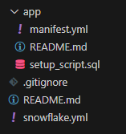
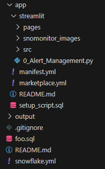

I recently went through the process of converting SnowMonitor (my Streamlit app for managing Snowflake alerts) to a Snowflake Native app to allow for better integration into Snowflake and posting to the Snowflake marketplace. Snowflake currently has poor documentation for native app setup and there's a lot of missing nuance around configuration setup, especially within Streamlit. I wanted to document the process here and relevant code to save future native app developers the hassle of troubleshooting the same problems I did.
A couple things to start:
- Streamlit on native apps are stuck in version 1.22, you'll probably need to rework features or revert features back to their experimental versions.
- Native apps work in such a way that objects are owned by an application and actions are executed by an application role so apps are deployed into an environment completely blind.
- As such, you need to be purposeful about how you grant privileges and objects to an application/application role upon setup.
- The above also means that if you have any "USE ROLE" commands those need to be stripped out.
To start, you'll want Snow CLI installed for this to make development easier. I'll leave it to you to configure and test your connection. Once you've navigated to the directory where your project will live, execute the following:
snow app init snowmonitorYou'll be left with the following:

Drop your Streamlit app inside your app folder or it won't be legible. This is what my directory looked like at the end of the port:

The .gitignore and READMEs are self-explanatory; I want to outline the rest of these files.
manifest.yml
manifest_version: 1
version:
name: snowmonitor
label: "V1_0"
artifacts:
readme: README.md
setup_script: setup_script.sql
default_Streamlit: Streamlit/0_Alert_Management.py
privileges:
- READ SESSION:
description: "To allow Streamlit to access some context functions"A few notes:
- The manifest_version is mandatory, leave it as 1 for now.
- The version is mostly for metadata; you can copy what I have or read the docs and configure it after you're ready to publish.
- References is where you link objects in Snowflake so that you can reference them within your application. I'll come back to this section later.
Artifacts is where all the Streamlit magic happens; link your README and setup_script like you can see above and make sure your default Streamlit matches whatever .py file you've created for your main Streamlit app. The privileges section is where you can configure privileges that the consumer can grant through the UI. You are very limited in your selection and the six available commands can be found below. If you want to grant additional privileges, you'll need to have the consumer create an owners' rights stored procedure that your application can call to execute code as accountadmin rather than the application role. See the full documentation here:
Request global privileges from consumers | Snowflake Documentation
Create the manifest file for an application package | Snowflake Documentation
setup_script.sql
CREATE OR ALTER VERSIONED SCHEMA core;
CREATE APPLICATION ROLE IF NOT EXISTS app_public;
CREATE SCHEMA IF NOT EXISTS core;
GRANT USAGE ON SCHEMA core TO APPLICATION ROLE app_public;
CREATE STREAMLIT IF NOT EXISTS CORE.SNOWMONITOR_STREAMLIT
FROM '/streamlit'
MAIN_FILE = '/0_Alert_Management.py'
;
GRANT USAGE ON STREAMLIT CORE.SNOWMONITOR_STREAMLIT TO APPLICATION ROLE app_public;The setup script allows you to define SnowSQL code that will run when your consumer initially installs the application. The core code you'll need is below, but you can also define anything else your application might possibly need.
The above code just defines the schemas where the app will live, the Streamlit app, the application role and then grants usage on the native app to the application role defined above. I'll be coming back to this file when we're defining procedures to allow for more privileges than allowed in the manifest.yml.
snowflake.yml
Don't overcomplicate this part of the native app; this is everything you'll need to stand up the app:
definition_version: 1
native_app:
name: snowmonitor
source_stage: stage_content.snowmonitor_stage
artifacts:
- src: app/*
dest: ./
package:
name: snowmonitor_package
application:
name: snowmonitor_streamlit
debug: falseReplace all the names and paths with those desired. This file determines where data is stored and what to name the application. Now that you've configured everything you can test deployment by executing:
snow app run -c connection_nameIf all configuration files are set up correctly you should be notified that your app is running and be able to view your Streamlit app within the Snowflake UI under the apps section.
Expanding privileges outside the manifest.yml header
The privileges header has a limited scope of commands you can request; in my case, I needed to be able to execute, suspend and resume alerts. There's currently no way to ask a consumer for these privileges so the only workaround is to get the user to create an owner's rights stored procedure that the Streamlit app can execute. I'll use creating execute alerts privileges as an example. First, inside of the setup_script.sql file, add the following code to run upon initial install:
CREATE OR ALTER VERSIONED SCHEMA config;
GRANT USAGE ON SCHEMA config TO APPLICATION ROLE app_public;
CREATE PROCEDURE IF NOT EXISTS CONFIG.REGISTER_SINGLE_REFERENCE(ref_name STRING, operation STRING, ref_or_alias STRING)
RETURNS STRING
LANGUAGE SQL
AS $$
BEGIN
CASE (operation)
WHEN 'ADD' THEN
SELECT SYSTEM$SET_REFERENCE(:ref_name, :ref_or_alias);
WHEN 'REMOVE' THEN
SELECT SYSTEM$REMOVE_REFERENCE(:ref_name, :ref_or_alias);
WHEN 'CLEAR' THEN
SELECT SYSTEM$REMOVE_ALL_REFERENCES(:ref_name);
ELSE
RETURN 'unknown operation: ' || operation;
END CASE;
RETURN NULL;
END;
$$;This code creates a config schema under the native app package and defines a procedure that based on inputs adds a system reference. Then inside of the consumer account after install we would run the following code:
CREATE DATABASE IF NOT EXISTS SNOWMONITOR;
CREATE SCHEMA IF NOT EXISTS snowmonitor.SNOWMONITOR_SCHEMA;
GRANT ALL PRIVILEGES ON DATABASE SNOWMONITOR TO APPLICATION SNOWMONITOR_STREAMLIT;
GRANT ALL PRIVILEGES ON SCHEMA SNOWMONITOR.SNOWMONITOR_SCHEMA TO APPLICATION SNOWMONITOR_STREAMLIT;
-- Alert Execution Code
CREATE PROCEDURE IF NOT EXISTS SNOWMONITOR.SNOWMONITOR_SCHEMA.EXECUTE_ALERT(alert_input VARCHAR)
RETURNS VARCHAR
LANGUAGE SQL
EXECUTE AS OWNER
AS $$
DECLARE
query STRING;
grant_query STRING;
BEGIN
GRANT EXECUTE ALERT ON ACCOUNT TO ROLE accountadmin;
GRANT_QUERY := 'GRANT OPERATE ON ALERT '||alert_input||' TO ROLE ACCOUNTADMIN';
EXECUTE IMMEDIATE :GRANT_QUERY;
QUERY := 'EXECUTE ALERT '||alert_input||'';
EXECUTE IMMEDIATE :QUERY;
RETURN 'done';
END;
$$
;
CALL SNOWMONITOR_STREAMLIT.CONFIG.REGISTER_SINGLE_REFERENCE('EXECUTE_ALERT', 'ADD', SYSTEM$REFERENCE('PROCEDURE', 'SNOWMONITOR.SNOWMONITOR_SCHEMA.EXECUTE_ALERT(VARCHAR)', 'PERSISTENT', 'USAGE'));This SnowSQL code creates a database for native app related transactions and creates a procedure with owner's rights that executes an alert. Finally, it calls the register_single_reference() function defined in the setup_script.sql to add the procedure as a reference. Back in the setup_script.sql, add the following code: